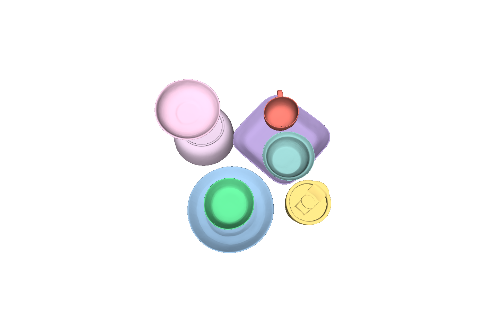
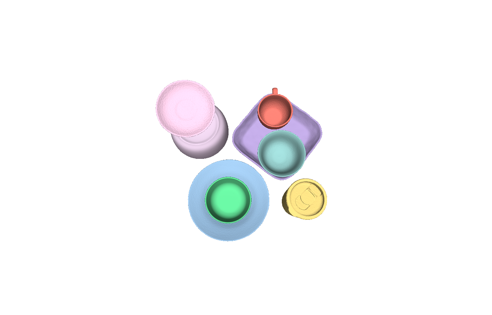

Monocular 3D scene reconstruction has recently seen significant progress. Powered by modern neural architectures and large-scale data, recent methods achieve high performance in depth estimation from a single image. Meanwhile, reconstructing and decomposing common scenes into individual 3D objects remains a hard challenge due to the large variety of objects, frequent occlusions and complex object relations. Notably, beyond shape and pose estimation of individual objects, applications in robotics and animation require physically-plausible scene reconstruction where objects obey physical principles of non-penetration and realistic contacts. In this work we advance object-level scene reconstruction along two directions. First, we introduce MessyKitchens, a new dataset with real-world scenes featuring cluttered environments and providing high-fidelity object-level ground truth in terms of 3D object shapes, poses and accurate object contacts. Second, we build on the recent SAM 3D approach for single-object reconstruction and extend it with Multi-Object Decoder (MOD) for joint object-level scene reconstruction. To validate our contributions, we demonstrate MessyKitchens to significantly improve previous datasets in registration accuracy and inter-object penetration. We also compare our multi-object reconstruction approach on three datasets and demonstrate consistent and significant improvements of MOD over the state of the art. Our new benchmark, code and pre-trained models will become publicly available on our project website: https://messykitchens.github.io/.
Accurate 3D scene reconstruction plays a pivotal role for many applications in digital arts, industrial inspection, heritage preservation, robot learning and simulation. While navigation may only require free space estimation, robotic manipulation and animation rely on detailed reconstruction of individual objects with physically-plausible contacts.
We advance object-level scene reconstruction on two fronts. First, we introduce MessyKitchens, a new benchmark with 100 real-world scenes featuring cluttered environments, 130 kitchen objects scanned with high precision, and accurate object contacts. We also provide MessyKitchens-Synthetic with 1.8k contact-rich scenes and 10.8k rendered images for training. Second, we propose Multi-Object Decoder (MOD), extending SAM 3D with joint object-level scene reconstruction that captures contextual relationships and enforces physically-plausible configurations.

Data acquisition. We collect 100 real scenes with 130 kitchenware objects from 10 kitchens, scanned using an Einstar Vega 3D scanner. Objects are scanned on a transparent acrylic surface from above and below for complete geometry. Scenes are assembled with three difficulty levels: Easy (4 objects, minimal contact), Medium (6 objects, stacked configurations), Hard (8 objects, nested and maximum contact). Our normals-aware registration pipeline achieves mean depth error of 1.62 mm and median 0.91 mm—49.7% improvement over the second-best benchmark.
Synthetic data. MessyKitchens-Synthetic uses GSO assets with 600 scenes per difficulty level, 6 views each (10,800 images total), rendered with Blender Cycles for photorealism.

Registration ablation. Our distance+normals registration considerably improves over distance-only. Manual: 4.69 mm mean error; Distance only: 2.89 mm; Distance+normals (Ours): 1.62 mm.

Distance only

Distance+normals (Ours)

Qualitative comparison on MessyKitchens. MOD (Ours) refines pose and scale by enforcing scene-level geometric consistency. Gray surfaces denote ground truth. MOD correctly reconstructs objects in contact. The iterative transition below shows this refinement process in motion on a representative scene.
We additionally visualize how the reconstruction evolves from SAM 3D to MOD on a MessyKitchens scene. The animation is rendered from our transition visualizer and highlights how scene-level reasoning progressively improves object placement, contact plausibility, and consistency with the final scene layout.
s10-again-3This demo makes the iterative refinement easier to read than a static panel: the geometry starts from the SAM 3D reconstruction and smoothly converges toward the final MOD estimate while preserving the shared viewpoint.
Open the MP4 directly


Generated from our iterative transition visualization pipeline for MessyKitchens, showing how contact-aware reconstruction improves the final multi-object scene.
We introduced MessyKitchens, a benchmark with cluttered, contact-rich real-world scenes and high-fidelity 3D ground truth, and Multi-Object Decoder (MOD) for joint object-level scene reconstruction. Extensive experiments demonstrate that our approach significantly outperforms state-of-the-art on MessyKitchens, GraspNet-1B, and HouseCat6D, with strong out-of-distribution generalization. We believe MessyKitchens and MOD will provide a robust foundation for physics-consistent 3D computer vision.
© This webpage was in part inspired from this template.